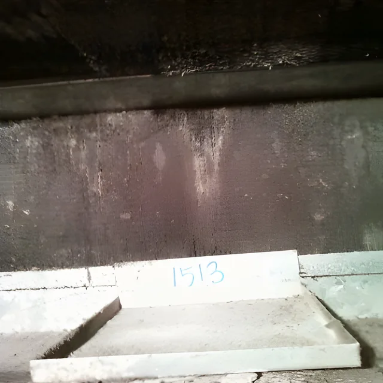
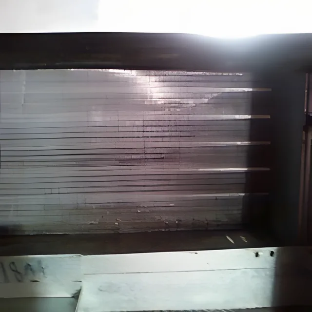

01 · CEILING CASSETTE · FCU
천장형 시스템 에어컨 · 팬코일(FCU)
필터 말고는 평소에 관리하기 어려운 자리라 냉각핀 · 송풍팬 · 드레인이 가장 많이 더러워집니다. 냉난방 효율이 떨어지고 바람이 약해집니다.
- 냉각핀(핀 코일)과 송풍팬(브로워) 분해세척
- 드레인 · 필터까지 함께 세척
- 레지오넬라균이 자라는 오염을 씻어 냅니다
주요 실적충주 건대병원 · 강원랜드 · 서부금융센터 · 아주대학교